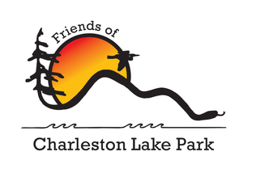

We need volunteers to help maintain and develop our trail system.
What does it mean? Well, it's pretty easy. You would sign up for a specific month on one trail. (For a list of the trails, see the Our Park section of this website) Trails vary in length from 1 to 10 km, easy to difficult rating. You would walk your trail twice a month, either alone or with another monitor, trimming back small brush and reporting larger problems to Park staff. Working with other Friends and Park staff, you would walk your trail on a regular basis, check out for fallen branches, clear off debris, reporting on maintenance problems to the Park staff. You would be expected top pick up garbage and report larger problems. Often you will meet other walkers who may need help or who will just thank you for the work you are doing. This all makes a difference.
Trail monitors receive special training from Park staff before they can begin their work. The scope of the work of being a Trail Monitor is limited to cleaning, setting out trail markers and minor clearance of brush on the trail. Another vital part is locating major problems, but reporting them to the Park staff through our reporting system, which is completely electronic and very effective. We have a Trail Master who gets us organized so that all trails are covered and who monitors the reports.
You also have to sign a volunteer agreement with the Park, which is a necessary formality to ensure you are protected. It also gives you access to the Park when you are monitoring.
Contact us if you would like to volunteer and become a Trail Monitor for the Friends! info@charlestonlakepark.ca
We are always eager to have more people involved. Board members serve on an annual basis and there are the usual jobs that need doing for an organization like ours.
Contact us at: email
